Running
Currently
DevOps Engineer @ Rover AI
uptimesince 21 Sep 2026
joined 21 Sep 2026 · Pune, India
I build, automate & scale
cloud-native infrastructure, Kubernetes workloads, CI/CD pipelines and infrastructure as code.
DevOps Engineer at Rover AI and former CNCF LFX mentee at kgateway, where I made end-to-end tests 97% faster. Kubernetes, AWS, Terraform and Go are my everyday tools.
devesh@rover:~$ whoami devesh-chouhan · devops engineer · india devesh@rover:~$ kubectl get jobs -n career NAME STATUS DURATION devops-engineer.rover-ai Running 28d swe-intern.hosho-digital Complete 4mo lfx-mentee.kgateway Complete 3mo devesh@rover:~$ cat focus.txt kubernetes · aws · terraform · ci/cd · go devesh@rover:~$
I'm a DevOps engineer who turns infrastructure into code and slow pipelines into fast ones. I learned in the open, with 25+ merged PRs across CNCF projects like kgateway. Today I keep things building, shipping and running at Rover AI.
uptimesince 21 Sep 2026
joined 21 Sep 2026 · Pune, India
97%
faster end-to-end tests per feature, with a "fast test" pattern adopted as the project's improvement plan.
25+
pull requests merged into open-source projects
7
projects contributed to, including CNCF's kgateway, Antrea, Harbor and OpenTelemetry
5.7k
on kgateway, the CNCF gateway whose test setup I helped modernize
4
enterprise solutions shipped in one internship: automation, AI, BI and web
Jabalpur Engineering College · 2022 — 2026
India
IST · UTC+5:30
kgateway-dev on GitHub, after an LFX mentorship in 2026
A cloud-native toolbox, sharpened on real clusters, real pipelines and real upstream code reviews. Point at a group to light it up in the orbit.


In practiceRan kgateway's E2E suites on kind clusters, wrote Deployment, Service, Ingress, ConfigMap, Secret & HPA manifests, and added a Helm chart release target upstream.
In practiceProvisioned EC2, RDS, IAM roles and security groups with Terraform, locked down with least-privilege policies.
In practiceBuilt build → test → deploy pipelines, enabled the nestif linter in kgateway's CI and contributed to Jenkins plugins.
In practice19 merged Go PRs in kgateway, Java for Jenkins plugins and Selenium automation, and plenty of time at the Linux shell.
In practiceCut E2E time per feature from 35s to 1s and wrote kgateway's first E2E testing guide for contributors.
In practiceShipped 4 enterprise solutions at Hosho Digital, including LLM-powered procure-to-pay automation.
Sep 2026 — Present
RunningRover AI · Pune, India
May 2026 — Aug 2026
CompleteHosho Digital · Indore, India
Mar 2026 — May 2026
CompleteCNCF LFX Mentorship · kgateway · Remote
I learn in public, through code review on real CNCF projects: 25+ merged pull requests across 7 open-source projects.
CNCF · cloud-native API & AI gateway
From linters and Helm release tooling to a full overhaul of end-to-end testing, this is my longest-running open-source home.
See all my kgateway PRsCNCF · Kubernetes networking with Open vSwitch
#6913Skip TestFQDNCacheMinTTL on clusters with Windows nodes
CNCF · cloud-native container registry
#496Default FormatUrl to HTTPS instead of HTTP
CNCF · observability framework
#4388Docs: using instrumentation libraries for C++
CNCF · configuration language & Flux controller
#236Make the flux-kcl-controller docs scripts work on Windows
CNCF · machine learning on Kubernetes
#4151Website: tidy the nav bar and move past events
CD Foundation · automation server
#272Increase test coverage of the embeddable-build-status plugin
Kubernetes · CI/CD
A containerized Python app shipped to Kubernetes by a GitHub Actions pipeline that builds, tests and deploys on every push.
AWS · Infrastructure as Code
Cloud infrastructure defined entirely in Terraform: compute, database, identity and network rules, reproducible from a single apply.
Open source · Go · Kubernetes
A "fast test" pattern for kgateway's end-to-end suites: share expensive setup and consolidate backends, so a feature test runs in about a second.
Power Platform · LLM · Hosho Digital
An end-to-end procurement workflow in Power Apps that replaces manual hand-offs, with an LLM that reads and extracts data from business documents.